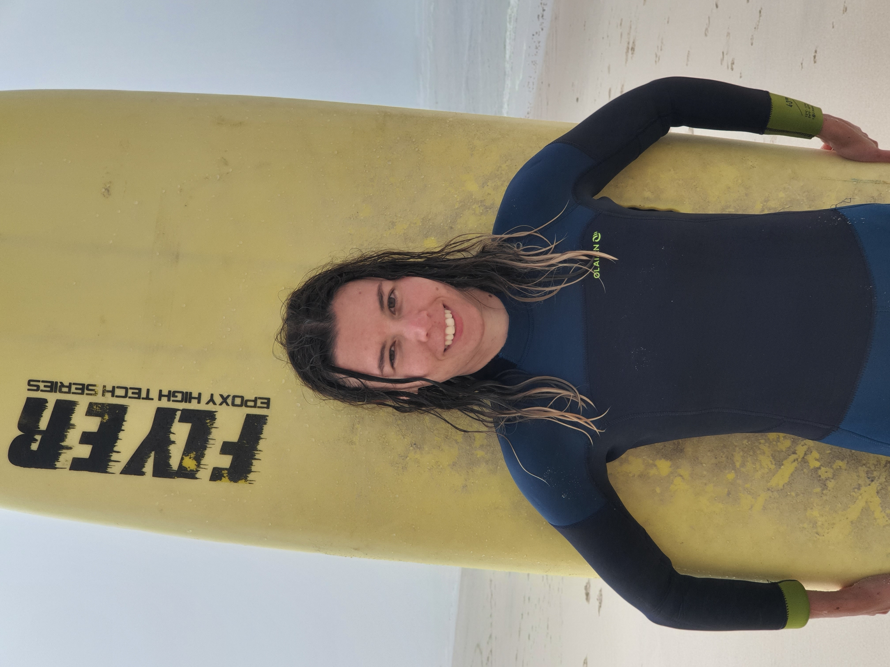
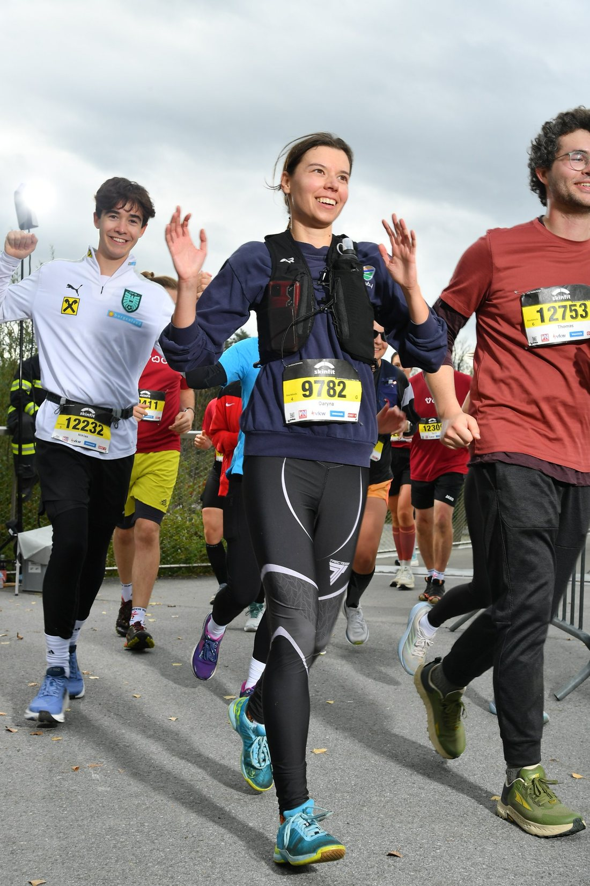
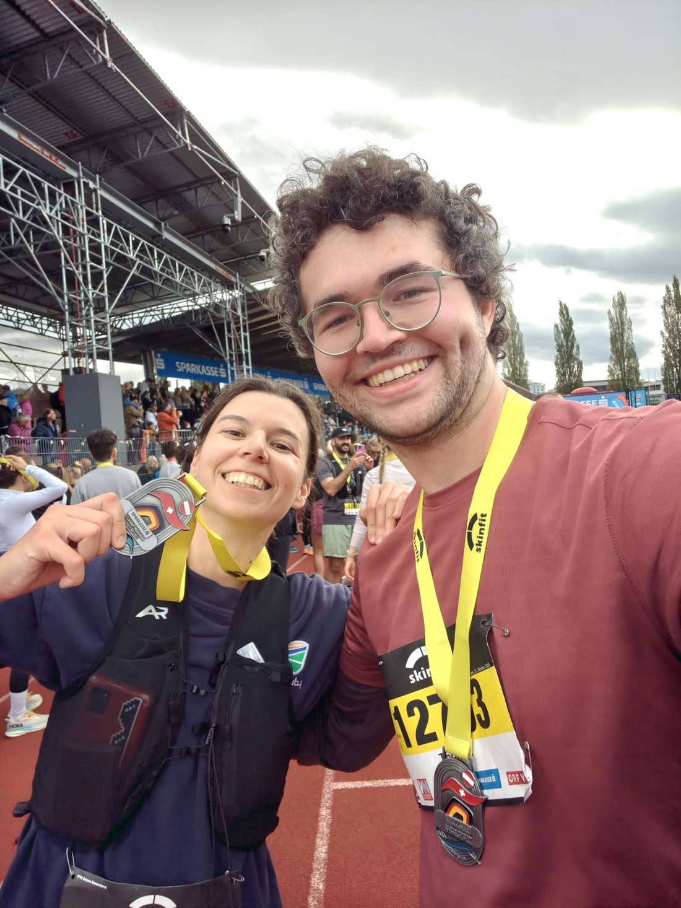
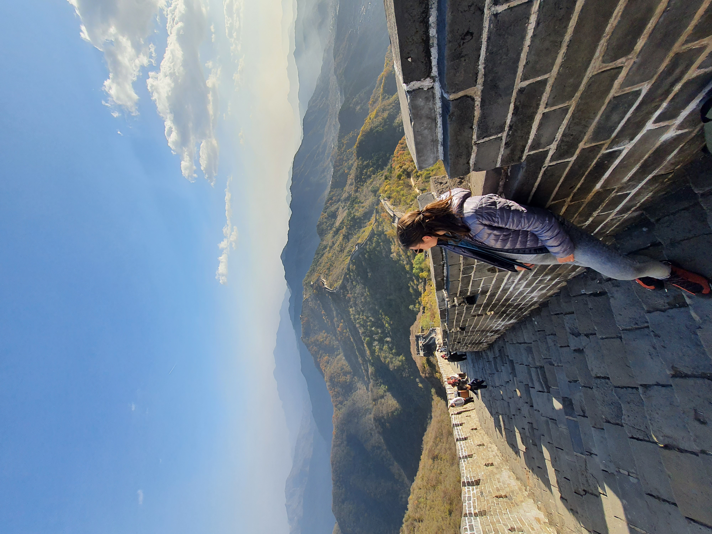
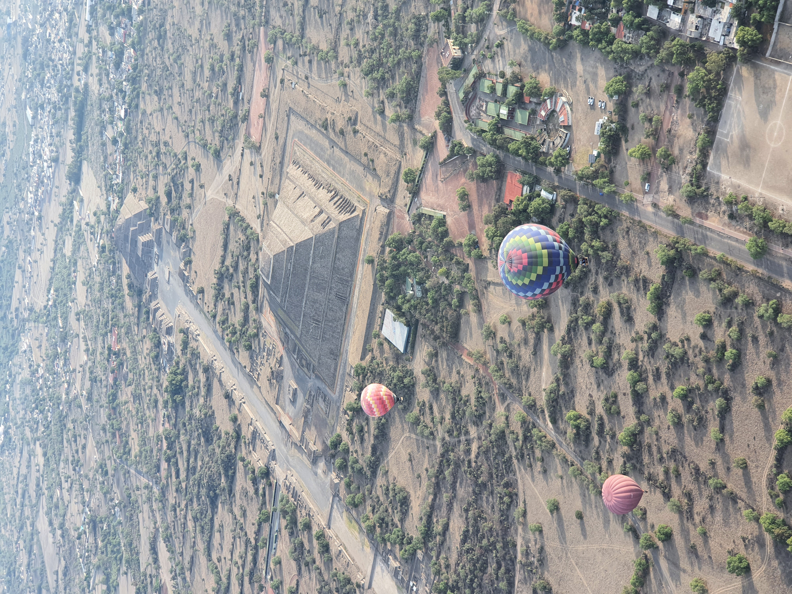
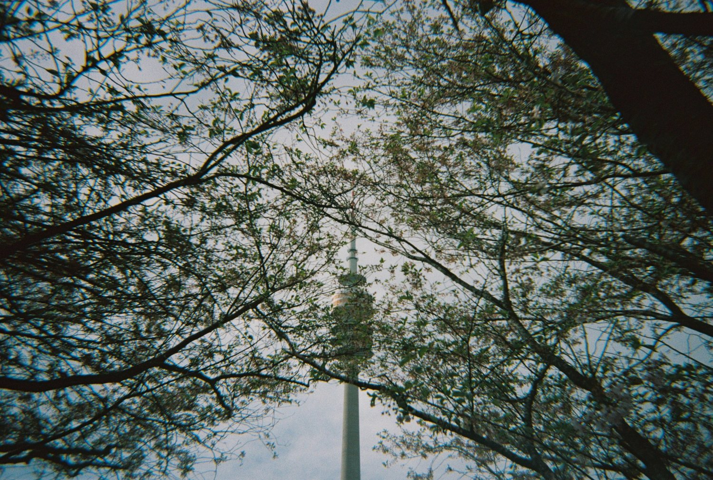
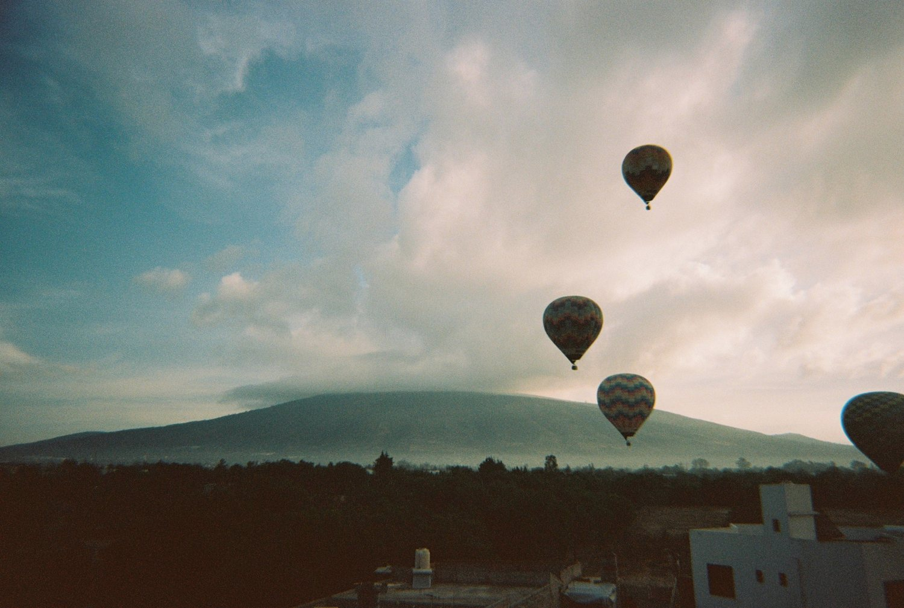
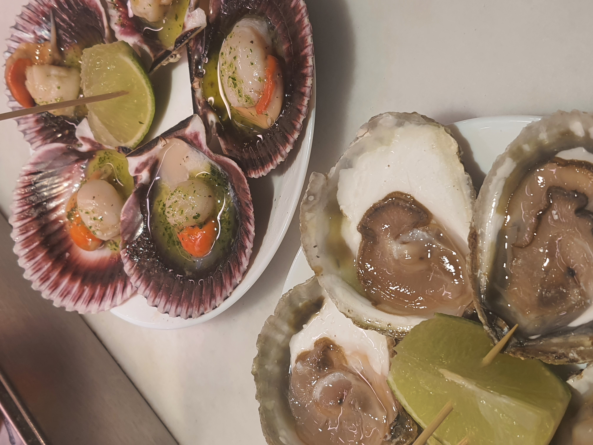
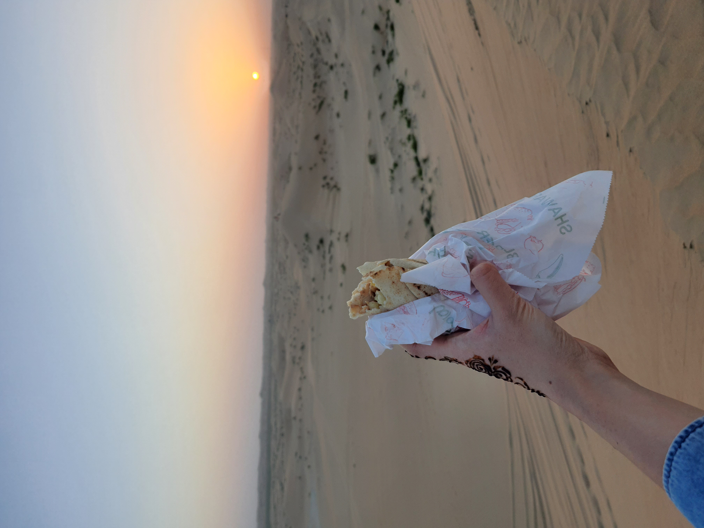

Interests

Sports
I am quite an outgoing and sporty person. During my school years, I have tried many sports: several water sports — swimming, yachting, and windsurfing — and big tennis. During my Bachelor's, I did athletics, which grew into functional training combined with yoga and pilates. After finishing my PhD, picked up on surfing. And due to living in Germany, of course, I love hiking.


Running
In October 2026, I ran my first ever half-marathon: the 3-Lands Half-Marathon in Lindau where Germany, Austria, and Switzerland meet.
(21.1 km, October 2026)


Travelling
(as of November 2026)


Photography
From time to time, I take pictures during my travels with one of my two film cameras.
Reading
I cannot imagine my life without reading, especially philosophical books. As a person working with AI and trying to find a balance between static human life and disruptive innovations, I am fascinated by sci-fi and discussions about human nature. Feminism is also a huge part of my life.


Food & Brunch
I also like nice food (more eating, but also cooking sometimes). I am quite a fan of fine-dining. One of my regular ways to spend a weekend: brunch with friends discovering a new place.